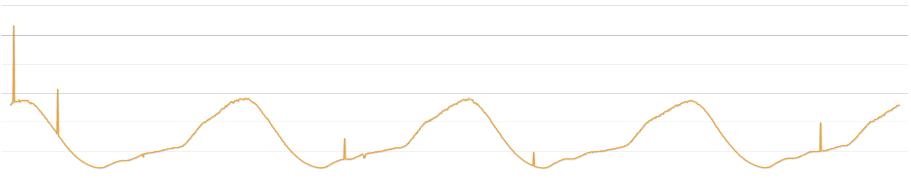
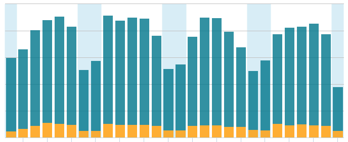
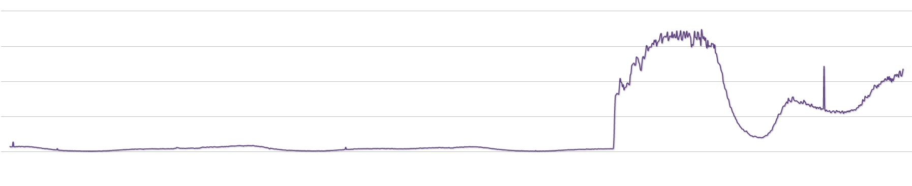
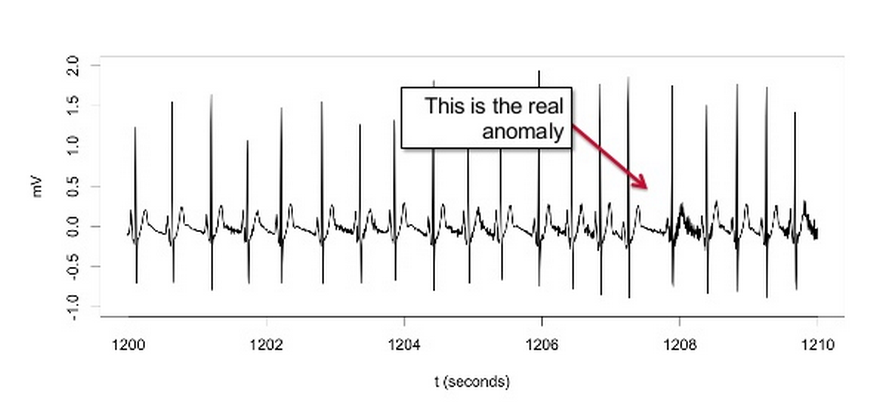
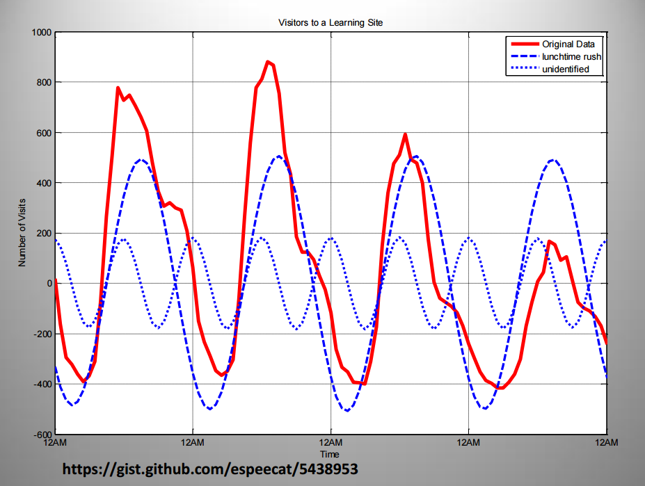

Luke Carmichael, luke@deepfield.net
Naim Falandino, naim@deepfield.net
Aaron Kosel, aaron@deepfield.net
Network Analysis and DDOS Mitigation
Lots of network data: BGP, Web, Netflow
Billions of tuples of data per day
Spike
What are you looking for?
Spikes? 
Regular Shifts in Normal Traffic 
Normal traffic? 

Percentiles!
... or mean
... or variance
Exponential Smoothing / Holt-Winters
Bayes
FFT
K-Means
Have features? Other ML fine too.
In physics, use FFT!

All your data belong to you.
You can tune it to your hearts content.
Works well on historical data sets.
React sooner!
Too much data to store/compute later.
You want the data now!
Can't lose my Netflix!
How to store the data?
How much information loss?
Use Windows? Linux is better.
One window going back N seconds?
Multiple windows at different granularities?
A balance between false positives and false negatives.
Delay detecting faults for more accurate detection.
If so, how long?
Use historical data to cheat a little.
Same machine learning problems, under/over fit your model.
Percentile
Simple spike example
Try variance (Welfords)
Try mean
Exponential smoothing
Bayes
Some algorithms are more tuned than others
import pycast.methods.exponentialsmoothing as es
http://pymc-devs.github.io/pymc/tutorial.html
http://www.r-bloggers.com/changepoint-analysis-of-time-series/
http://gallery.rcpp.org/articles/bayesian-time-series-changepoint/
http://wiki.cbr.washington.edu/qerm/index.php/Behavioral_Change_Point_Analysis
https://github.com/twitter/BreakoutDetection
http://www.wessa.net/download/stl.pdf
https://www.usenix.org/system/files/conference/hotcloud14/hotcloud14-vallis.pdf
http://hips.seas.harvard.edu/content/bayesian-online-changepoint-detection
http://en.wikipedia.org/wiki/CUSUM
http://www.slideshare.net/tdunning/strata-2014-anomaly-detection
http://www.jasonbailey.net/stuff/wp-content/uploads/2013/04/Time_series_and_fft_big_data_brighton.pdf
https://pafnuty.wordpress.com/2014/05/29/change-detection-tutorial/
https://github.com/hildensia/bayesian_changepoint_detection
https://github.com/amanahuja/change-detection-tutorial
http://argmax.jp/index.php?changefinder
https://blog.twitter.com/2014/breakout-detection-in-the-wild
https://blog.twitter.com/2015/introducing-practical-and-robust-anomaly-detection-in-a-time-series
https://github.com/swhustla/pydata-bayes-changepoint
https://gist.github.com/alexalemi/2151722
@deepfield
jobs@deepfield.net